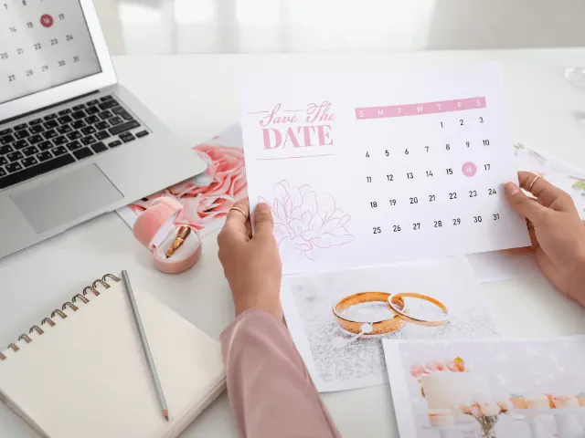

Partnerbijdrage
Gun jezelf de rust en laat de weddingplanner het werk doen
Gepubliceerd op 31 maart 2023, bijgewerkt op 26 februari 2024
Onderdeel van de gids Trouwen in Nijmegen
Natuurlijk is het plannen van een bruiloft een leuke en spannende tijd, maar het kan ook behoorlijk stressvol zijn. Er komt zoveel bij kijken: het regelen van de locatie, het kiezen van de juiste bloemen, het vinden van de perfecte jurk of het pak, het selecteren van de catering en nog veel meer. Het is niet gek dat sommige stellen het gevoel hebben dat ze er alleen niet uitkomen.
Dit is waar de weddingplanner om de hoek komt kijken. Een weddingplanner is een professionele eventplanner die gespecialiseerd is in het plannen van bruiloften. Het inschakelen van een weddingplanner kan een verstandige keuze zijn, vooral als je merkt dat je overweldigd raakt door de planning.
Wat zijn de voordelen van een weddingplanner?
Als je een weddingplanner inhuurt, bespaar je jezelf veel tijd en stress. Ze hebben ervaring en kennis van alle aspecten van het plannen van een bruiloft en weten precies waar ze moeten zoeken om de beste opties te vinden. Daarnaast luisteren ze naar jouw wensen en ideeën, waardoor je de bruiloft van je dromen krijgt binnen jouw budget en tijdlijn.
Tot slot kan een weddingplanner je helpen bij het vinden van de juiste leveranciers met exclusieve locaties die passend zijn binnen jouw budget, en ook onderhandelingsmogelijkheden voor prijsreductie. Kortom, gun jezelf rust door de voorbereiding aan eenzelfde deskundige toe te vertrouwen die er alles aan doet om ervoor te zorg dat je bruiloft de mooiste dag wordt.

Waar moet je op letten bij het kiezen van jouw weddingplanner?
Als je ervoor kiest om een weddingplanner in te huren, is het belangrijk om een professional te kiezen die goed bij jou past en die aan jouw wensen kan voldoen. Hier zijn een aantal zaken waar je op kunt letten bij het selecteren van jouw weddingplanner:
- Ervaring en referenties: Kijk naar de ervaring van de weddingplanner en vraag om referenties van eerdere klanten. Dit geeft je een idee van wat je kunt verwachten en hoe de planner omgaat met uitdagingen.
- Beschikbaarheid: Controleer of de weddingplanner beschikbaar is op de gewenste datum en hoeveel bruiloften hij of zij tegelijkertijd plant. Je wilt er zeker van zijn dat jouw weddingplanner voldoende tijd en aandacht heeft voor jouw bruiloft.
- Stijl: Zorg ervoor dat de stijl van de weddingplanner overeenkomt met jouw visie voor de bruiloft. Vraag om een portfolio van eerdere evenementen om te zien of deze aansluiten bij jouw smaak.
- Communicatie en chemie: Het is belangrijk dat je een goede chemie hebt met de weddingplanner en dat de communicatie soepel verloopt. Het is tenslotte iemand waarmee je intensief zult samenwerken om jouw droombruiloft te realiseren.
- Prijs: Overweeg het budget voor de bruiloft en wat de kosten zijn voor de diensten van de weddingplanner. Maak duidelijke afspraken over de prijs en de inhoud van de diensten.
Door deze factoren in overweging te nemen, kun je een weloverwogen beslissing maken bij het kiezen van jouw weddingplanner.
Waar in Nijmegen vind je de beste weddingplanners?
Cilvie: Cilvie is een 31-jarige weddingplanner uit Nijmegen met een passie voor bruiloften. Haar liefde voor huwelijken begon al op jonge leeftijd en groeide uit tot een carrière als professionele weddingplanner na het volgen van een opleiding in 2018. Na haar eigen bruiloft in 2022 kan ze bruidsparen nog beter bijstaan en deelt ze haar ervaringen en tips in haar blogs.
Het bruidsmeisje: Vivian is een enthousiaste, betrokken weddingplanner met een achtergrond in psychologie. Haar aanpak is persoonlijk en gericht op het vervullen van de wensen en dromen van het bruidspaar. Ze houdt van kleine mooie momenten, reizen en wandelingen maken en is sinds augustus 2020 mama van Nola Marie. Anouk Aimée is ook een betrokken weddingplanner met veel ervaring in hospitality en zakelijke evenementen. Haar aanpak is persoonlijk en gericht op het creëren van een ultieme huwelijksdag die alle verwachtingen overtreft. Ze geniet van gezelligheid, vakanties, quality time met haar gezin en het organiseren van fantastische bruiloften.